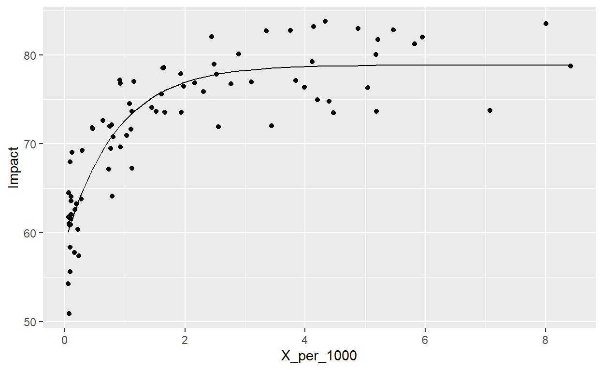

Sizing and use case to develop non linear models.
This quantitative research has been sparked by the book Doing Good Better which claimed that the marginal effect of being a physician in Western Europe was lesser than being a physician in Africa for example. The hypothesis is thus that the amount of Physician Per Capita has a diminishing marginal effect on the Life Expectancy at Birth.
Based on two publicly available World Bank data sets on the amount of practitioners, and on demographics per country, an original merged data set was created. The challenge was to find the years for which records were available for both data set, clean the data, and engineer variables to visualize the relation and test our hypothesis.
In the first graph, we will see how the amount of physician per 1000 capita has diminishing marginal impact on the life expectancy. Additionally, we will highlight a couple of countries of interest.
library(viridis)
Country_of_interest <- c("Belgium","Costa Rica","Papua New Guinea","Italy")
Graph_data$Legend <- "Other"
for(i in 1:nrow(Graph_data)){
if(Graph_data$`Country Name.x`[i]%in%Country_of_interest){Graph_data$Legend[i]<-levels(Graph_data$`Country Name.x`)[as.numeric(Graph_data$`Country Name.x`[i])]}
}
plot_ly(
data = Graph_data,
x = ~round(X_per_1000,2),
y = ~round(Impact,2),
text = ~Graph_data[,1],
type = "scatter",
mode="markers",
color = ~Legend,
colors = "viridis"
)%>%
layout(
title="<b>Visualisation of diminishing returns</b>",
xaxis = list(title="Amount of physician per 1000 capita"),
yaxis = list(title="Life expectancy")
)library(rmarkdown)
paged_table(Graph_data[,c(1,3:4)])Thanks to the log-log specification, we will be able to see the relation between the % variation of the two variables. We can thereby confirm that the relation is linear and that an increase of 1% in the amount of physician per 1000 capita will increase the life expectancy by 0.0683%.
Call:
lm(formula = log(Impact) ~ log(X_per_1000), data = Graph_data)
Residuals:
Min 1Q Median 3Q Max
-0.163084 -0.029912 0.006309 0.038050 0.112385
Coefficients:
Estimate Std. Error t value Pr(>|t|)
(Intercept) 4.272083 0.006110 699.17 <2e-16 ***
log(X_per_1000) 0.068262 0.004111 16.61 <2e-16 ***
---
Signif. codes: 0 '***' 0.001 '**' 0.01 '*' 0.05 '.' 0.1 ' ' 1
Residual standard error: 0.05464 on 78 degrees of freedom
Multiple R-squared: 0.7795, Adjusted R-squared: 0.7767
F-statistic: 275.7 on 1 and 78 DF, p-value: < 2.2e-16y <- lm0$fitted.values
plot_ly(
data = Graph_data,
x = ~round(log(X_per_1000),2),
y = ~round(log(Impact),2),
text = ~Graph_data[,1],
type = "scatter",
mode="markers",
color = ~Legend,
colors = "viridis"
)%>%
add_trace(
y = y,
type = "scatter",
mode = "lines",
color = "Regression Line",
line = list(color = "black")
)%>%
layout(
title="<b>Log - Log Specification</b>",
xaxis = list(title="Log amount of physician per 1000 capita"),
yaxis = list(title="Log life expectancy")
)We will end this report with a comparative numerical example of the marginal utility of an additional physician in Belgium and in Papua New Guinea.
# BELGIUM
Country <- "Belgium"
n_pract <- Population_data[which(Population_data$`Country Name.x`==Country),"X_per_1000"]*Population_data[which(Population_data$`Country Name.x`==Country),"Impact"]/1000
new_X_per_1000 <- (n_pract+1)*1000/Population_data[which(Population_data$`Country Name.x`==Country),"Impact"]
initial_X_per_1000 <- Population_data[which(Population_data$`Country Name.x`==Country),"X_per_1000"]
X_per_1000_incr <- ((new_X_per_1000-initial_X_per_1000)/initial_X_per_1000)
impact_le_perc <- as.numeric(X_per_1000_incr*lm0$coefficients[2])
impact_le <- Graph_data$Impact[which(Graph_data$`Country Name.x`==Country)]*(1+impact_le_perc)
impact_years <- (impact_le-Graph_data$Impact[which(Graph_data$`Country Name.x`==Country)])*Population_data[which(Population_data$`Country Name.x`==Country),"Impact"]
impact_lifes <- impact_years/Graph_data$Impact[which(Graph_data$`Country Name.x`==Country)]
print(impact_lifes)[1] 11.46186# PAPUA NEW GUINEA
Country <- "Papua New Guinea"
n_pract <- Population_data[which(Population_data$`Country Name.x`==Country),"X_per_1000"]*Population_data[which(Population_data$`Country Name.x`==Country),"Impact"]/1000
new_X_per_1000 <- (n_pract+1)*1000/Population_data[which(Population_data$`Country Name.x`==Country),"Impact"]
initial_X_per_1000 <- Population_data[which(Population_data$`Country Name.x`==Country),"X_per_1000"]
X_per_1000_incr <- ((new_X_per_1000-initial_X_per_1000)/initial_X_per_1000)
impact_le_perc <- as.numeric(X_per_1000_incr*lm0$coefficients[2])
impact_le <- Graph_data$Impact[which(Graph_data$`Country Name.x`==Country)]*(1+impact_le_perc)
impact_years <- (impact_le-Graph_data$Impact[which(Graph_data$`Country Name.x`==Country)])*Population_data[which(Population_data$`Country Name.x`==Country),"Impact"]
impact_lifes <- impact_years/Graph_data$Impact[which(Graph_data$`Country Name.x`==Country)]
print(impact_lifes)[1] 1032.712We found a linear relationship by using the log-log specification but we should remember that even though we found a non-linear relationship between the Life Expectancy and the amount of physicians per 1000 capita, we did it through a linear model.
library(ggplot2)
ggplotly(ggplot(Graph_data,aes(round(X_per_1000,2),round(Impact,2)))+
geom_point() +
stat_smooth(method="lm", formula = "y ~ log(x)", se=FALSE))With the next chunk, we will define a non-linear prediction function and use maximum likelihood function to find the betas of the non-linear model. The biggest advantage of the model is that it takes into account the fact that Life Expectancy seems to flatten after a certain point.
predictor_function <- function(beta,x){
beta[1]+beta[2]*exp(-beta[3]*x)
}
non_linear_model <- function(beta,x,y){
y_hat <- predictor_function(beta,x)
sum((y-y_hat)^2)
}
beta <- optim(rnorm(3), non_linear_model, method = "L-BFGS-B",
x = Graph_data$X_per_1000,
y = Graph_data$Impact,
lower = c(-Inf,-Inf,1e-5),
upper = c(Inf,Inf,Inf))$par
Graph_data$Y_hat <- predictor_function(beta,Graph_data$X_per_1000)
ggplot(data=Graph_data)+
geom_point(aes(X_per_1000,Impact))+
geom_line(aes(X_per_1000,Y_hat))